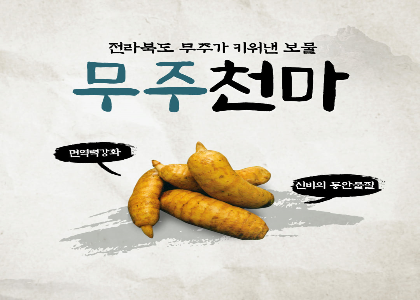

'천마'는 하늘에서 떨어져 마목(마비가 오는 증상)을 치료했다고 전해지는 귀중한 약재이며,
혈연개선과 중품 치료, 뇌질환에 효과가 있는 것으로 알려져 있다.
예로부터 천마는 재배하기가 까다로운 식물이며, 자연 산출량이 극히 적어 이전부터 '산삼보다 구하기 어려운 귀한 약재'로 여겨져 왔다.
무주에서 전국 생산량의 50% 이상을 생산하는 무주의 특화품목이다.